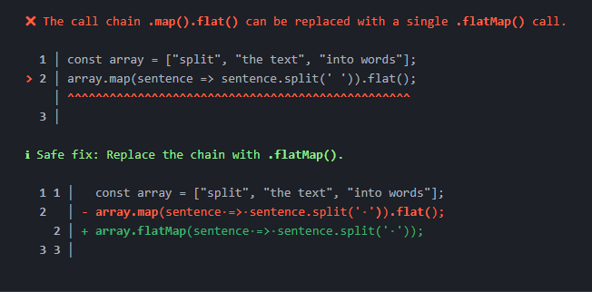

Julien
Développeur JS/TS


Développeur JS/TS
Formatage et analyse de code
// JavaScript
const john = {
firstname : "John" ,
lastname : 'Watson' ,
address : {
streetName : 221 + "B Baker Street" ,
city : 'Londres' , } , } ;
const usersReponse = [ {
lastname : "Holmes" ,
firstname : 'Sherlock' ,
address : {
streetName : 221 + 'B Baker Street' , city : 'Londres', }, } , { firstname : 'Lestrade' } ,
john , ] ;
Pour la création du chaos : https://github.com/rohitdhas/shittier
// JavaScript
const john = {
firstname: 'John',
lastname: 'Watson',
address: {
streetName: 221 + 'B Baker Street',
city: 'Londres',
},
};
const usersReponse = [
{
lastname: 'Holmes',
firstname: 'Sherlock',
address: {
streetName: 221 + 'B Baker Street',
city: 'Londres',
},
},
{ firstname: 'Lestrade' },
john,
];
Pour la mise en forme : https://biomejs.dev/
Analyse statique

Les outils


Rapide

*source https://biomejs.dev/
Projet actuel


Projet Nodejs
Résoudre les problèmes et apprendre les meilleures pratiques 
2024
Faciliter la migration des outils existants tels que Prettier et ESLint vers Biome
L'ajout de fonctionnalités en ligne de commande (CLI)
Supporter plus de languages : css, html, et Markdown
Faire du "cross-linting
Détection des dépendances non utilisées dans un projet